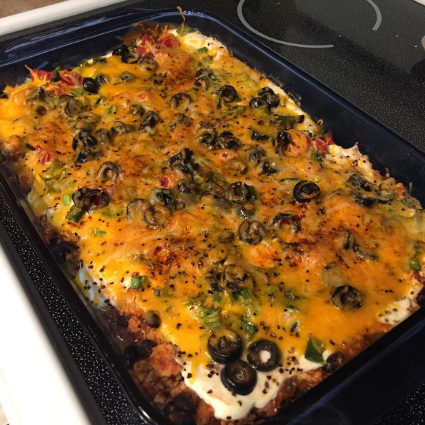

Mexican Casserole

Description
Ingredients
- 1 pound lean ground beef
- 2 cups salsa
- 1 (16 ounce) can chili beans, drained
- 3 cups tortilla chips, crushed
- 2 cups sour cream
- 1 (2 ounce) can sliced black olives, drained
- ½ cup chopped green onion
- ½ cup chopped fresh tomato
- 2 cups shredded Cheddar cheese
Steps
- Preheat oven to 350 degrees F (175 degrees C).
- In a large skillet over medium-high heat, cook ground beef until no longer pink. Stir in salsa, reduce heat, and simmer 20 minutes, or until liquid is absorbed. Stir in beans, and heat through.
- Spray a 9x13 baking dish with cooking spray. Spread crushed tortilla chips in dish, and then spoon beef mixture over chips. Spread sour cream over beef, and sprinkle olives, green onion, and tomato over the sour cream. Top with Cheddar cheese.
- Bake in preheated oven for 30 minutes, or until hot and bubbly.
A Mexican Casserole is not a specific recipe
It is a hot dish that contains mexican style ingredients layered or mixed together and baked in an oven.Convenience is the main reson to prepare a Mexican Casserole.It is an entire meal in one dish.Mexican Casseroles tend to be seasoned with chiili powder,cumin or garlic.
easy Mexican Casserole
For more recipes clik on the links below
Steak Marinade